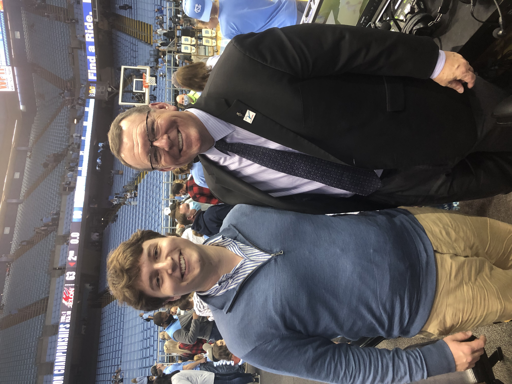
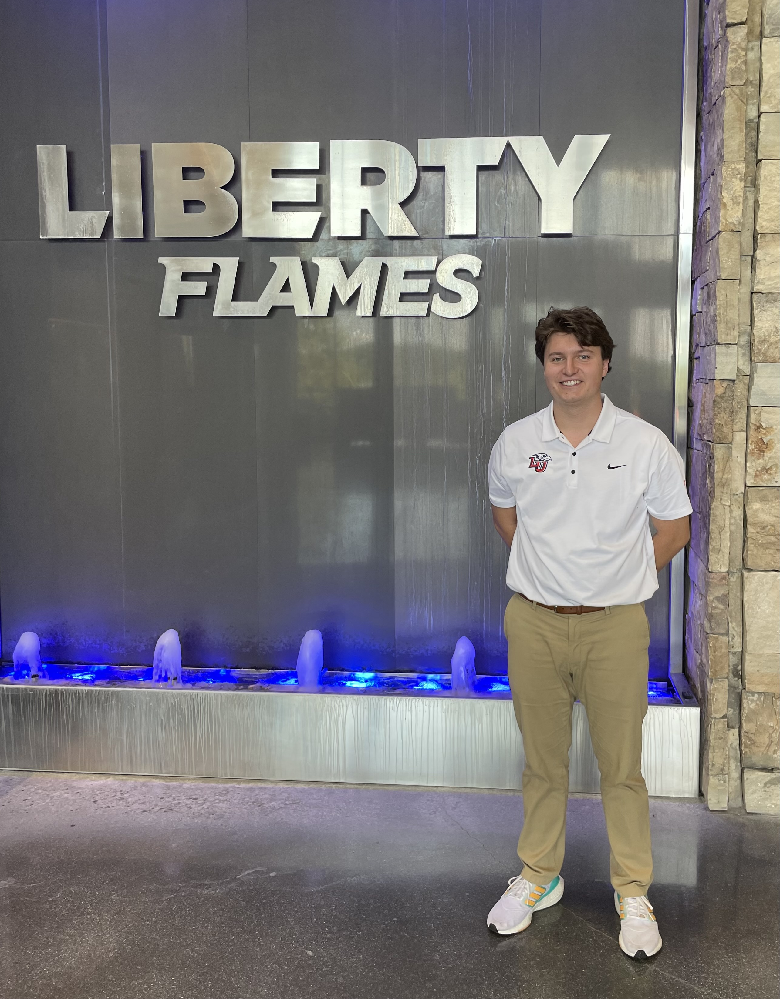
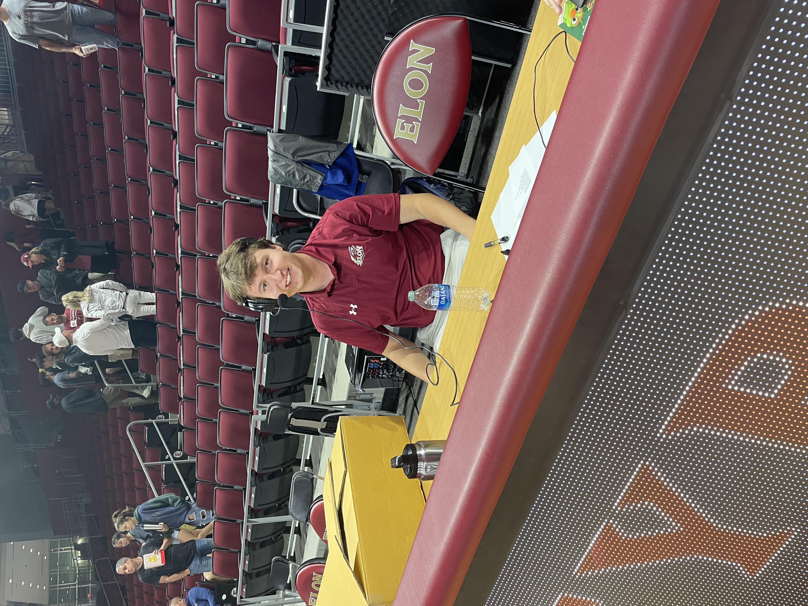

My Passion for Sport
Sports have been my biggest passion for a while. Growing up around an hour from the University of Virginia allowed me to watch many high level football and basketball games with my dad who was very passionate about it allowed me to not only learn and understand the game but also come to love it. Through sport, I have learned that I want to be a broadcaster. One of my biggest broadcaster role models is Wes Durham '98 who is an alumni of the Elon University Communications school.
Internship with Liberty Athletics Communications
Interning for Liberty University Athletics Communications this previous summer has allowed me to learn a lot about the industry that I hope to go into one day. I learned how to use Photo Shelter, Adobe Acrobat Pro, and Dropbox for multiple creative projects. I also assisted with Student-Athlete Summer Bridge program media training, Mens Basketball Press Conferences, and the Football Media Week Pronunciation Guide. It has inspired me to continue my goal to work in Athletics and around sport.
Work Expereince with Elon Athletics Communications
I am currently working as a Public Address Announcer for the Elon Athletics Communications. It has been cool to hone my own broadcasting voice and announcing in front of a large crowd for the first time. This has been a dream of mine for a while. It has been an unreal expereince so far.
